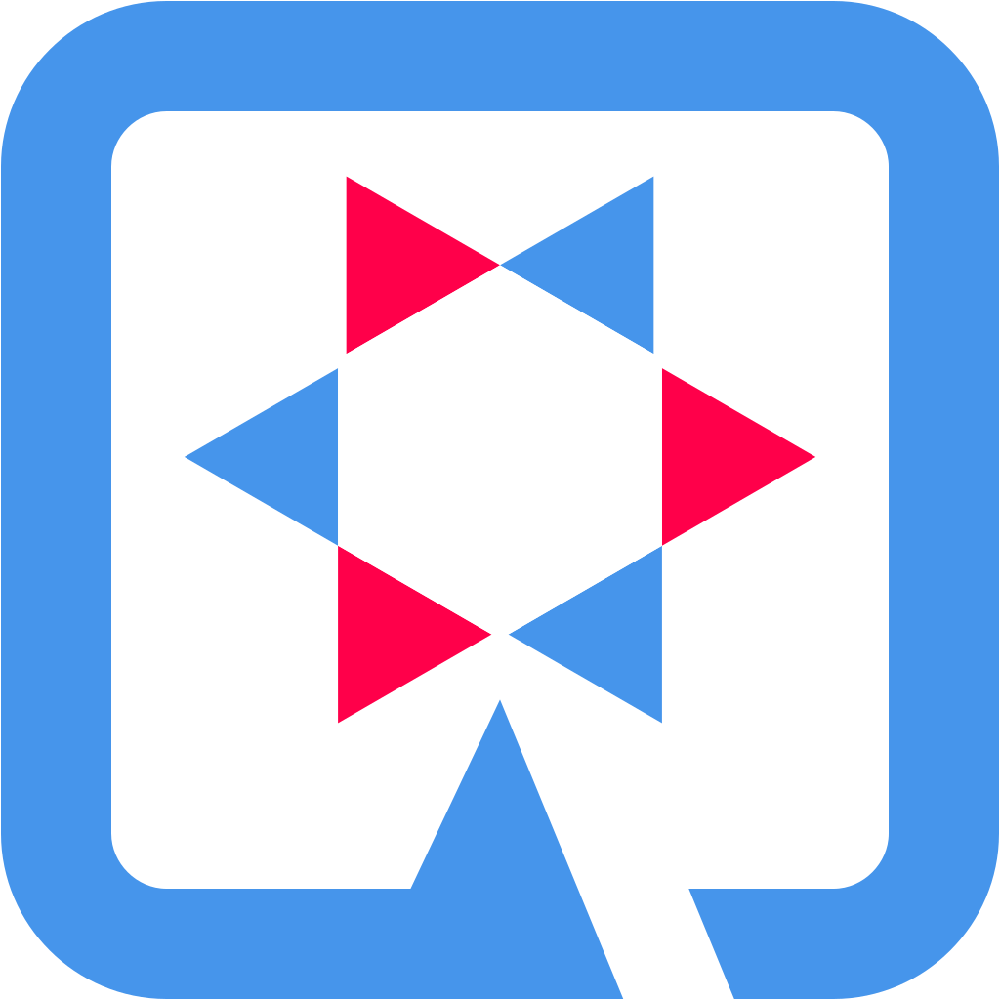

<!DOCTYPE html>
<html lang="en">
    <head>
        <meta charset="UTF-8">
        <title>OpenAPI UI (Powered by Quarkus 2.12.0.Final)</title>
        <link rel="stylesheet" type="text/css" href="swagger-ui.css" >
        <link rel="stylesheet" type="text/css" href="theme-feeling-blue.css" >

        <link rel="shortcut icon" href="favicon.ico" type="image/x-icon">
        <link rel="icon" href="favicon.ico" type="image/x-icon">
        <link rel="stylesheet" type="text/css" href="style.css" >
    </head>

    <body>
        <div id="swagger-ui"></div>
        <script src="swagger-ui-bundle.js" charset="UTF-8"></script>
        <script src="swagger-ui-standalone-preset.js" charset="UTF-8"> </script>
        <script>

            window.onload = function() {
                
                // If Url is relative, append the host and port
                var oar = "/api/q/swagger-ui/oauth2-redirect.html";
                if(oar.startsWith("/")){
                    oar = window.location.protocol + "//" + window.location.host + oar;   
                }
                
                console.log(oar);
                
                var ui = SwaggerUIBundle({
                            url: '/swagger',
                            dom_id: '#swagger-ui',
                            deepLinking: true,
                            presets: [SwaggerUIBundle.presets.apis,SwaggerUIStandalonePreset],
                            plugins: [SwaggerUIBundle.plugins.DownloadUrl],
                            layout: 'StandaloneLayout',
                            oauth2RedirectUrl: oar,
                          })
                
                
                window.ui = ui;

                document.getElementsByClassName("link")[0].innerHTML = "<a id='swaggerUiLogoLink' href='/api/q/swagger-ui'></a><a id='swaggerUiTitleLink' href='/api/q/swagger-ui'></a>";
            }
        </script>
    </body>
</html>
